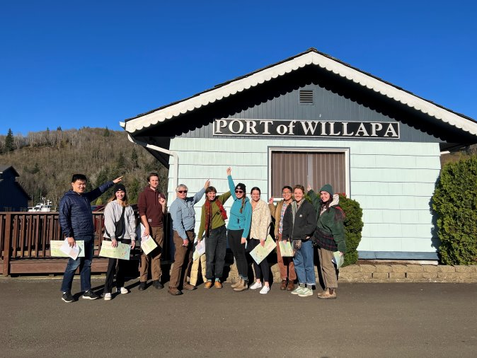

Artifacts
These artifacts are a small collection of things that I have done in the past two years of CEP that has stood out to me. All of them were important parts of my education, and provided me with new experiences and challenged me in some way.
Pacific County Housing Inventory Project (CEP 460)
During the Fall quarter of 2022, I was a part of a project team under CEP 460: Planning in Context that was responsible for working with Pacific County, Washington in creating an affordable housing inventory. I was responsible for GIS tools and the creation of maps and other digital assets. As a part of this project, we were able to visit Pacific County and met various stakeholders and community leaders as a part of the process. I included this experience as an artifact as it was the first "real-life" planning project that I've had, and to be able to apply my specific skillsets on such a project was very rewarding for myself, as well as collaborating with a large team and getting to know everyone on the team better as a part of the project.
Co-Point of Committee on Academic Policies and Procedures (CAPP)
During my two years in CEP, I have been a part of CAPP - Committee on Academic Policies and Procedures, as well as taking over as a co-point for the committee in my senior year. During my time in CAPP, I gained a lot of experience in running meetings, presenting proposals, facilitating discussions, and other valuable skills. I was a part of various projects such as revising the internship requirement, Plumb Manual revisions, as well as CEP core values. I am very grateful for being a part of this committee, as well as leading it this senior year.
Study Abroad (Sum 2022): UK & Netherlands - Sustainable Urban Mobility
During the summer of 2022, I was a part of an urban planning study abroad program that took place in the UK and Netherlands. The trip itself was quite an experience, and while it was chaotic and challenging at times, it was still a fun time. From looking at the rail systems of London and Amsterdam, to bike rides in the countryside of the Netherlands, and petting sheep on a farm in the Cotswolds, the trip was one to be remembered.